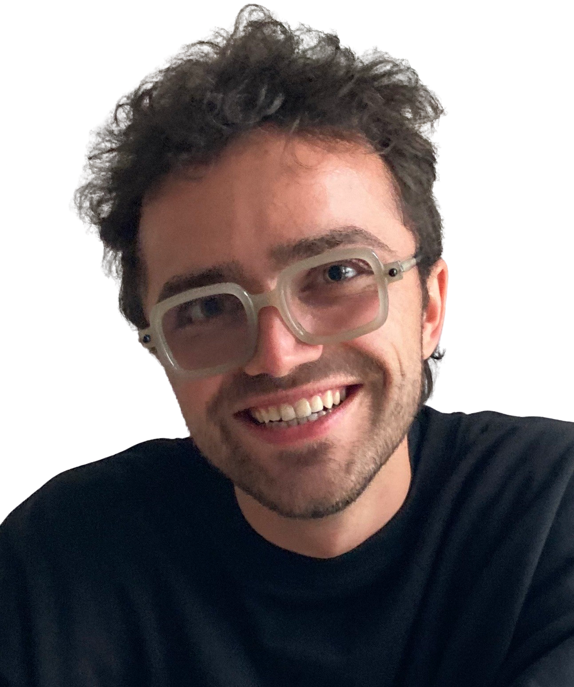

 Working on the SwipeMath App at Sophia Edu Labs Computer Science Master's student @ETH Zurich Previously Mathematics & Economics at TU Berlin, Harvard, Max Planck MIS Supported by the German Academic Foundation and Heinrich Böll Foundation. Co-Founder Starcode e.V., BLISS Berlin, Culture Campus Berlin Working on Thinkers & Makers, a Podcast about Startups & Science in Europe Contact me: friedrich.wicke@protonmail.com, or via Linked In Follow me on Instagram and Twitter